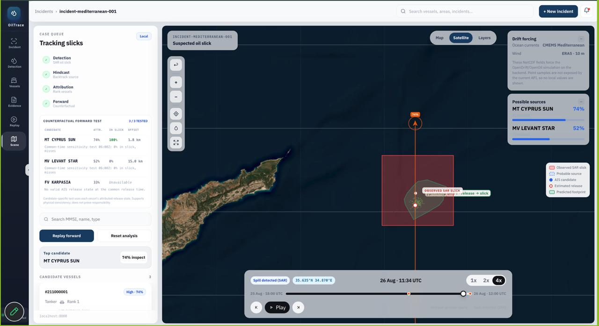
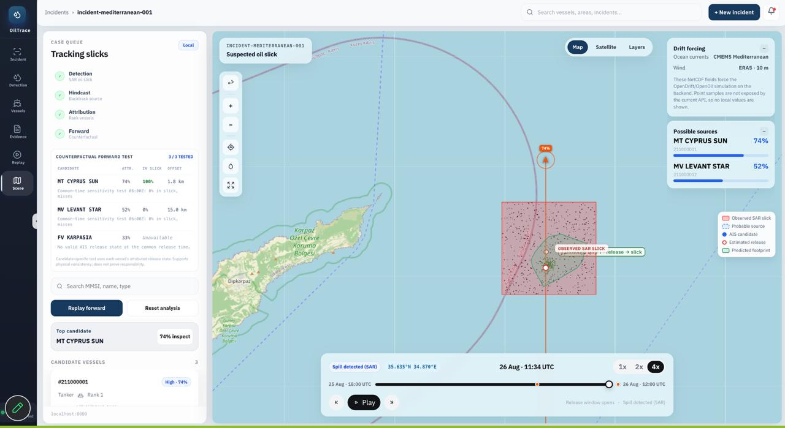

Work · 02
Oil Spill Detection
Maritime console that detects oil slicks in satellite radar, backtracks drift, and ranks the vessel that caused it.


Measured
| Metric | Value | Window | Source |
|---|---|---|---|
| Internal round result, of all teams at Vedam | 1st | Sep 2026 | Smart India Hackathon 2026 internal round, Vedam |
| Attribution tests passed, counterfactual forward runs | 3 of 3 | validation | Test set in the repository, attribution/tests |
Problem
A slick shows up on Sentinel-1 radar hours after the spill. By then the vessel responsible is somewhere else. Detection alone names a location; the useful question is which ship.
Smart India Hackathon 2026 posed this as a maritime intelligence problem: detect, then attribute.
What I built
The attribution module. It reconstructs vessel tracks from AIS position reports, which are sparse and noisy, then runs each candidate forward under the same ocean-current forcing the detection side uses to backtrack the slick. Candidates whose forward drift lands on the observed slick rank highest.
The candidate-vessel ranking in the console is my code. The detection model and the console UI were built by teammates; my module is the bridge between them.
Result
1st rank in Vedam's internal round, with the national round ahead. The attribution passed 3 of 3 counterfactual forward tests on the validation set: the ranked vessel was the planted culprit each time.
Learned: The ranking is only as honest as the counterfactual. Run the drift forward from each candidate, not just backward from the slick.